Miyako
Miyako · Fukuoka
Miyako
Highlighted on the Fukuoka map.
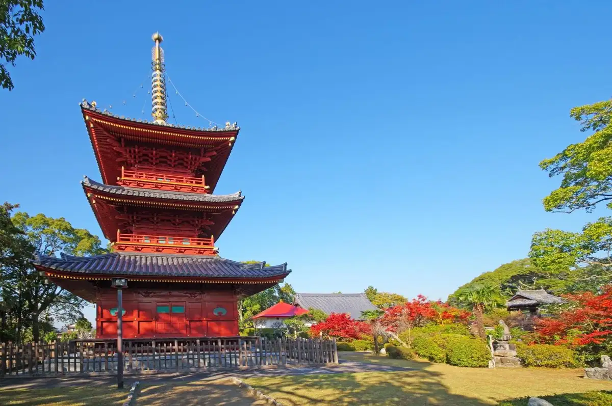
Dining
うどんの真之介
うどんの真之介
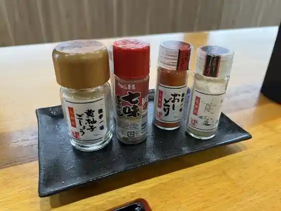
フルーツ工房 えふ
フルーツ工房 えふ
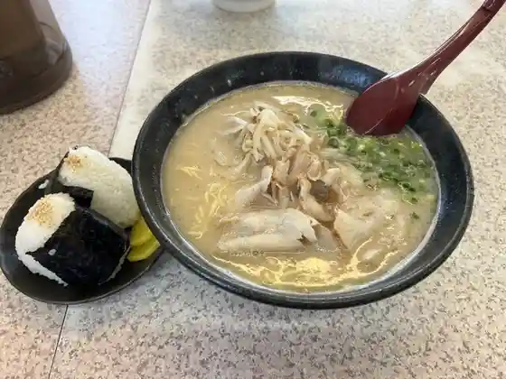
ラーメンの横綱勝山
ラーメンの横綱勝山
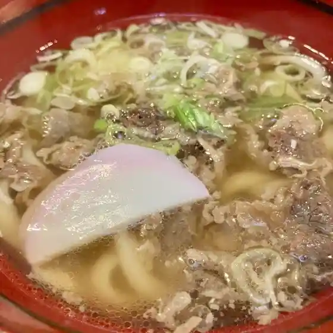
丸亀 本店
丸亀 本店
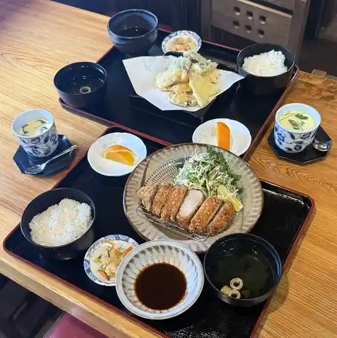
藪
藪
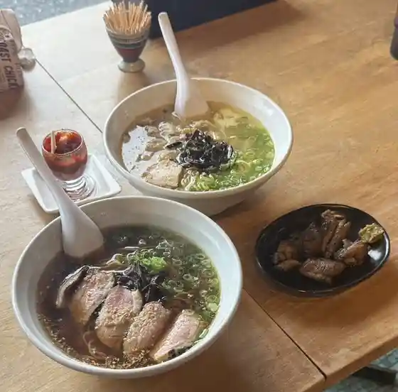
塩 SOBA さくら亭
SOBA
森のキッチン
森のキッチン
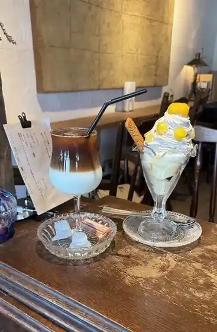
Antique&Cafe Annola
Antique&Cafe Annola
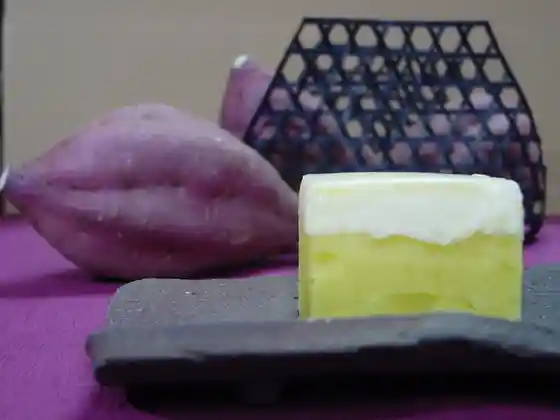
花げしき
花げしき
旬犀庵
旬犀庵
花いちもんめ
花いちもんめ
肉うどん いのうえ 勝山店
肉うどん いのうえ 勝山店
まっちゃんうどん
まっちゃんうどん
銀寿し 豊津店
銀寿し 豊津店
LITTLE APARTMENT
LITTLE APARTMENT
アブタール みやこ店
アブタール みやこ店
隠国の食 伊良原
隠国の食 伊良原
みち草
みち草
いのうえいちご strawberrykitchen
strawberrykitchen
そらのたね
そらのたね
中国喫茶館 藍村
中国喫茶館 藍村
みやこのくに
みやこのくに
Kitchen Garden COR
Kitchen Garden COR
鶏福
鶏福
大黒家
大黒家
京都カントリー倶楽部×BUDOUNOKI
京都カントリー倶楽部×BUDOUNOKI
なないろテラス
なないろテラス
八雲亭
八雲亭
お弁当屋さん 平吉
お弁当屋さん 平吉
町中華 笑びす屋
町中華 笑びす屋
石窯pizza カパリリ
pizza
お食事と茶房とギャラリ－のかりんかん
お食事と茶房とギャラリ-のかりんかん
勝山御所カントリークラブ レストラン
勝山御所カントリークラブ レストラン
菓子工房KEiKi.
KEiKi.
アンジュール
アンジュール
Fruttare
Fruttare
カフェ セゾン
カフェ セゾン
古民家スタジオカフェ おた福
古民家スタジオカフェ おた福
いのうえ いちご
いのうえ いちご
洋菓子工房こふれ
洋菓子工房こふれ
食工房 神楽
食工房 神楽
ずぼら寿し
ずぼら寿し
チェリーゴルフクラブ小倉南コース レストラン
チェリーゴルフクラブ小倉南コース レストラン
木犀花
木犀花
今日cafe
cafe
みやこ町 国府の郷
みやこ町 国府の郷
山八
山八
手打ち蕎麦 たか槻
手打ち蕎麦 たか槻
Cafe&Bar TEKTON
Cafe&Bar TEKTON
セブンイレブン みやこ町役場前店
セブンイレブン みやこ町役場前店
M’S
M’S
惣菜屋やまちゃん
惣菜屋やまちゃん
セブンイレブン 勝山黒田店
セブンイレブン 勝山黒田店
からあげ 季楽
からあげ 季楽
プチパン
プチパン
からあげ唐空
からあげ唐空
特牛
特牛
茶房 雪月花
茶房 雪月花
お好み焼き おがた
お好み焼き おがた
ほっともっと みやこ豊津店
ほっともっと みやこ豊津店
麦の穂
麦の穂
ラヴィアンローズ
ラヴィアンローズ
よってこ四季犀館
よってこ四季犀館
ジェニモ 本店
ジェニモ 本店
仕出し かわかみ
仕出し かわかみ
豊津の荘
豊津の荘
ほっともっと みやこ勝山店
ほっともっと みやこ勝山店
束屋
束屋
ロワ
ロワ
デイリーヤマザキ 福岡犀川店
デイリーヤマザキ 福岡犀川店
カフェ ランタン
カフェ ランタン
けもの料理 地獄のひさべえ
けもの料理 地獄のひさべえ
達磨さん
達磨さん
林龍平酒造場
林龍平酒造場
OSTERIA CANTERA
OSTERIA CANTERA
味工房ひさつね
味工房ひさつね
ユータウン
ユータウン
ふじ
ふじ
瓢鰻亭・ひまわりこども
瓢鰻亭・ひまわりこども
だるま食堂
だるま食堂
Yakiniku Reataurant Gyutoku
Yakiniku Reataurant Gyutoku
Hana Ichimomme
Hana Ichimomme
Ramen No Yokozuna Shouzan
Ramen No Yokozuna Shouzan
Fruit Factory Emi
Fruit Factory Emi
Sushi Dokoro Sakita Katsuyama Main Store
Sushi Dokoro Sakita Katsuyama Main Store
Marugame Seimen Main Shop
Marugame Seimen Main Shop
Ginzushi Toyotsu
Ginzushi Toyotsu
Fukuya
Fukuya
Joyfull
Joyfull
Yakiniku Toraya
Yakiniku Toraya
Kyoto Sweet Sha
Kyoto Sweet Sha
Tofu Restaurant Yamahachi
Tofu Restaurant Yamahachi
Kawakami
Kawakami
Fuji
Fuji
Karaoke House Chie
Karaoke House Chie
Zubora Sushi
Zubora Sushi
Arima
Arima
Okonomiyaki Ogata
Okonomiyaki Ogata
Hotto Motto Miyako Katsuyama
Hotto Motto Miyako Katsuyama
Kagura
Kagura
Jidori Ryori Kyoto
Jidori Ryori Kyoto
Hisabee
Hisabee
Okashi No Riziere
Okashi No Riziere
Karaoke Sandawara
Karaoke Sandawara
Fuji No Takoyaki
Fuji No Takoyaki
Daikokuya
Daikokuya
Mori No Kitchen
Mori No Kitchen
Kanenonaruoka
Kanenonaruoka
Michikusa
Michikusa
Dekitate Miyakomaiomusubiya
Dekitate Miyakomaiomusubiya
Forest Restaurant
Forest Restaurant
Midori No Yakata
Midori No Yakata
Katsuyama Gosho Country Club Restaurant
Katsuyama Gosho Country Club Restaurant
Hyomante Himawari Kodomo
Hyomante Himawari Kodomo
Edible Garden
Edible Garden
Karaoke Fantasy
Karaoke Fantasy
Daruma Shokudo
Daruma Shokudo
Daruma San
Daruma San
Yotteko Shikisaikan
Yotteko Shikisaikan
Aoyagi
Aoyagi
Lantern
Lantern
Mugen An
Mugen An
Sms Fukuoka
Sms Fukuoka
Katsuyama Manju
Katsuyama Manju
Rowa
Rowa
Pastry Coffret
Pastry Coffret
Sights
Matsuki Orchard
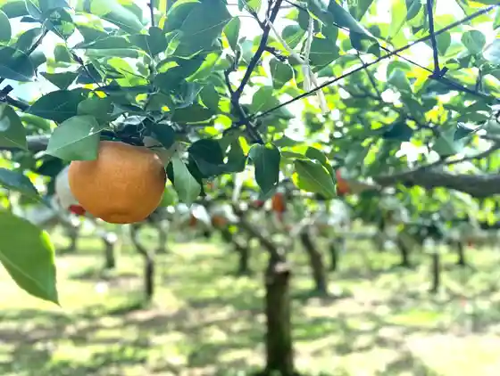
Buzen Kokubunji Sanjunoto
Jabuchi Mori no Birejji
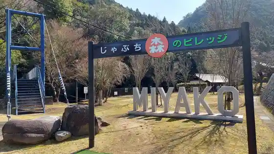
Mune no Kannon
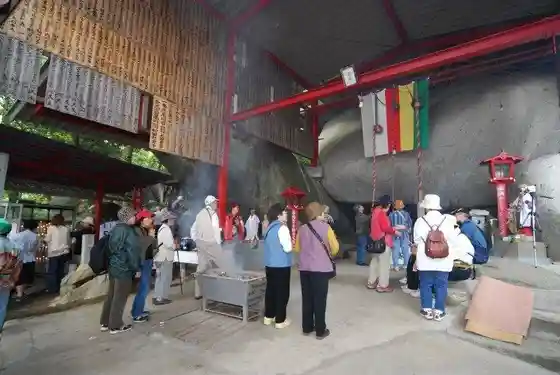
Ayatsuka Burial Mound
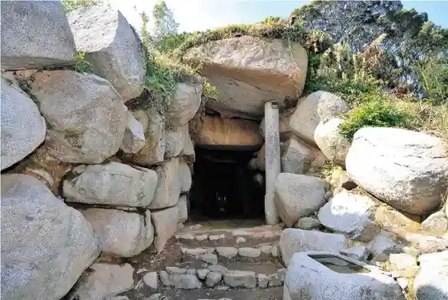
Fukuokaken Ei Irahara Dam
Norin Sambutsu Chokubai Tokoro Yotteko Shiki Sai Kan
Tore Tate Market Bi Yoru Furuka Tsu Yama
Kyu Fukuoka Prefectural Ikutoku Kan Koko Kodo (Shiei Kan)
Hebi Fuchi Falls
Tachibana Tsuka Burial Mound
Miyako Rekishi Minzoku Museum
Buzen Kokubunji Ato
Chuai Park
Hakkei Yama Nature Park Cherry Blossoms
Oitachi Hachiman Shrine
Buzen Ko Ato
Naganuma Ie House
Ogi Hachiman Burial Mound
Sembon Hanamomo Sono
Hayashi Ryuhei Shuzo Ba
no Toge
Hakkei Yama Nature Park
Buzen Kokubun Amadera Ato
Miyako Toyotsu Hanashobu Park
Shoya Tsuka Burial Mound
Sen Nyobo no Yamazakura
Bodai Haiji Ato
Miyako Toyotsu Bussan Chokubai Tokoro Ko no Sato
Hiko Toku Kabuto Tsuka Burial Mound